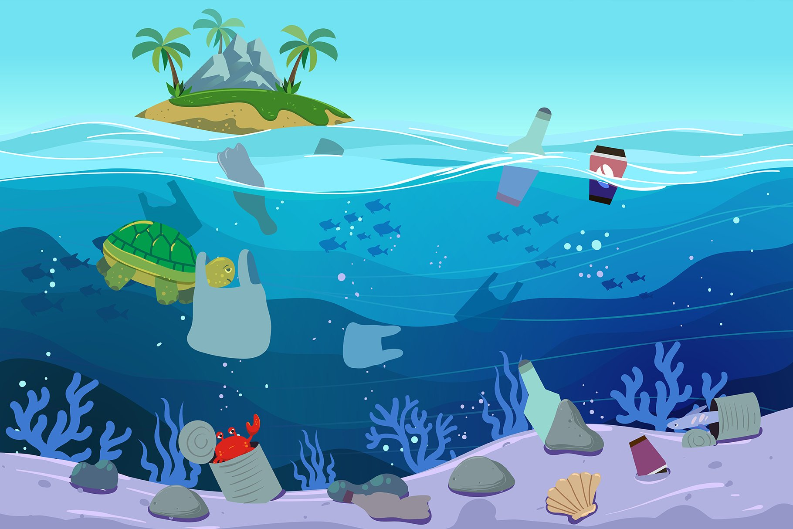

Urbanization has significant impacts on marine, land, and aerial ecosystems. As cities grow and expand, they often encroach on natural habitats, leading to loss of biodiversity and disruption of ecological processes. Pollution, noise, and light from urban areas can also have negative effects on wildlife, affecting their behavior, breeding, and survival.
However, there are also opportunities for urban areas to support biodiversity and ecosystem health through green spaces, such as parks, green roofs, and community gardens. By designing cities with nature in mind, we can create sustainable and resilient urban ecosystems that benefit both people and wildlife.